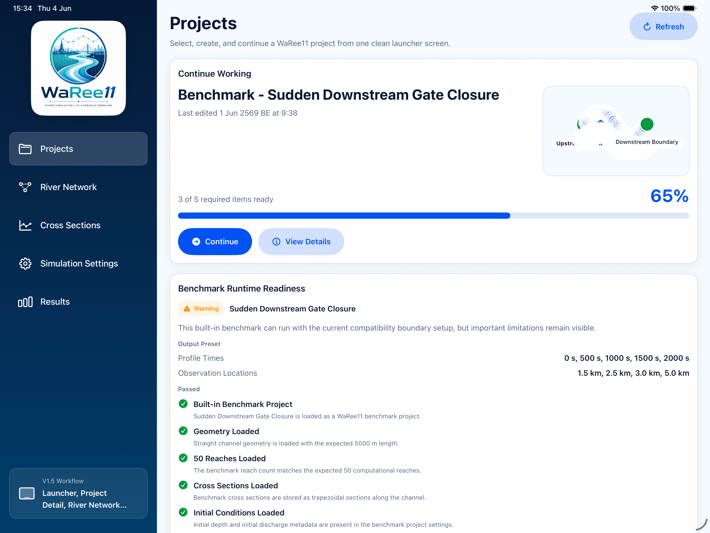
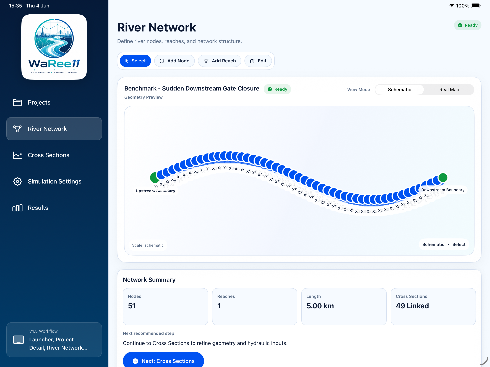
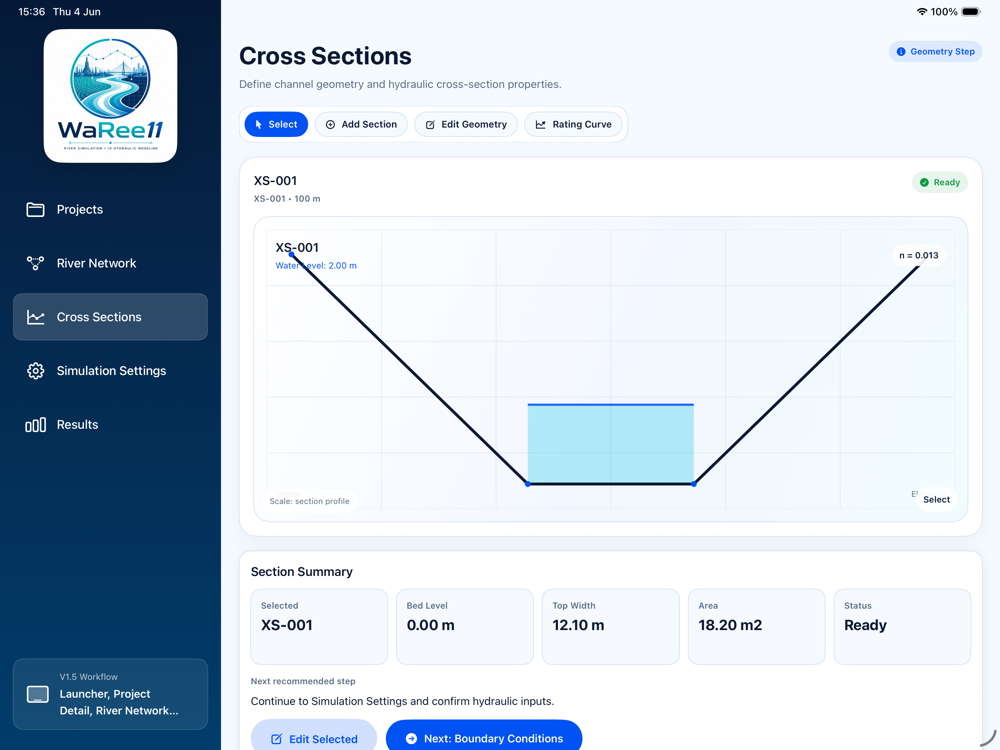
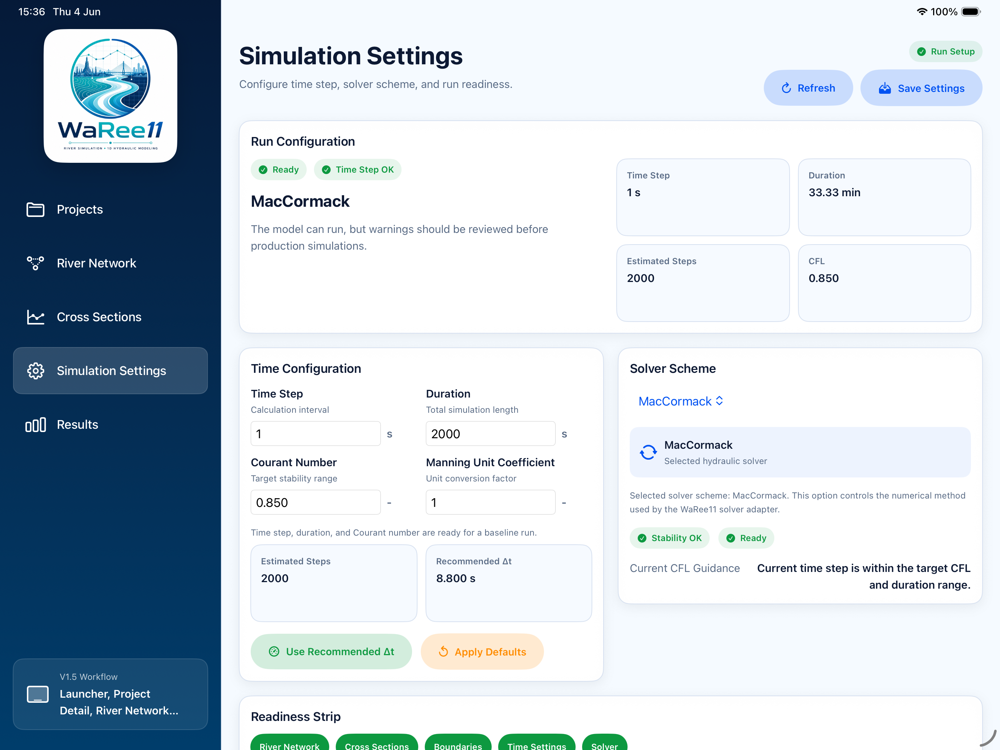
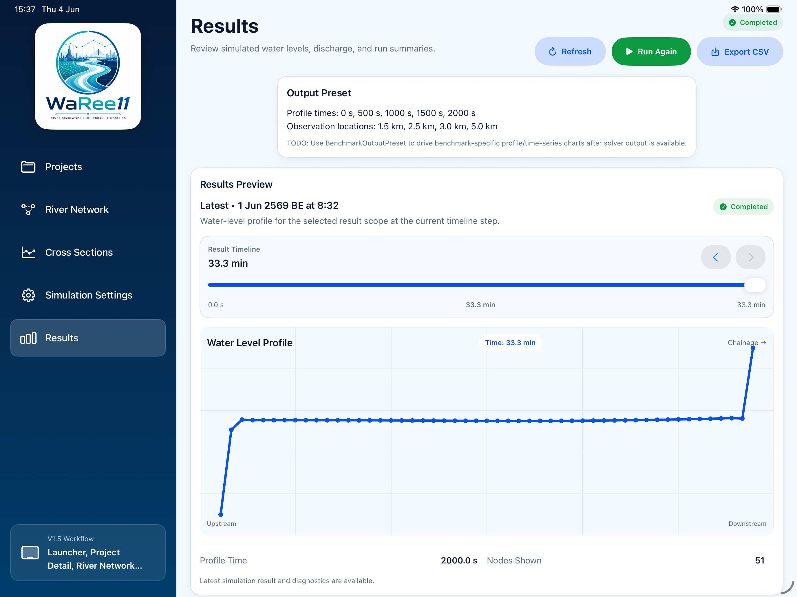

User Manual
Open PDF
WaRee11 v1.5 User Manual
A guided draft manual covering core WaRee11 workflows, app navigation, and model setup for new users.
iPadOS Hydraulic Modeling
Build, visualize, and analyze river simulation models with a clean iPadOS workflow.
Scroll inside the iPad to explore the app.





Documentation and product materials for river simulation teaching, engineering review, and applied hydraulic research.
Join the TestFlight preview to evaluate WaRee11 with your students, project teams, or research collaborators.
Documentation
Open the latest WaRee11 draft manuals for product onboarding and hydraulic model reference work.
A guided draft manual covering core WaRee11 workflows, app navigation, and model setup for new users.
A draft technical reference focused on hydraulic modeling details, configuration guidance, and engineering review context.